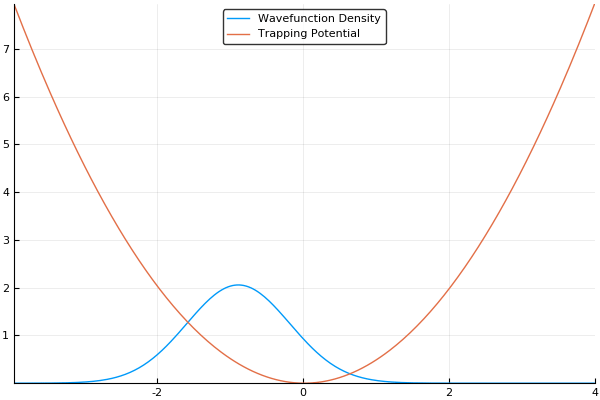

The Split-Operator Method
The Split-Operator Method (also called the Split-Step Method), was actually the primary method I used to solve the Schrödinger equation during my PhD. It is one of the simplest and fastest methods for this purpose and is widely used throughout modern quantum research in the area, in particular when dealing with the Non-linear Schrödinger Equation (NLSE):
which follows from the notation provided in the quantum systems chapter: is a quantum wave-function with spatial () and time () dependence, is a laplacian, and is a potential of some sort (like or something). In this case, we also add an interaction term next to a nonlinear term. This is the system I studied for most of my PhD (granted, we played a few tricks with parallelization and such, so it was slightly more complicated).
At its heart, the split-op method is nothing more than a pseudo-spectral differential equation solver... That is to say, it solves the Schrödinger equation with FFT's. In fact, there is a large class of spectral and pseudo-spectral methods used to solve a number of different physical systems, and we'll definitely be covering those in the future. As mentioned in the quantum systems section, we can represent a quantum wavefunction in momentum space, which is parameterized with the wavevector . In the Hamiltonian shown above, we can split our system into position space components, , and momentum space components, . I'll be honest, I didn't know what notation to use for because is used to describe momentum. I settled on for real space, but that is somewhat notationally ambiguous. In addition, will indicate momentum space because it is a sum of all wavevectors, typically notated as . Bad notation aside, let's continue.
If we assume a somewhat general solution to our quantum system:
and assume we are simulating our system by a series of small timesteps (), we can perform similar splitting by using the Baker-Campbell-Housdorff formula:
This accrues a small amount of error () related to the commutation of the real and momentum-space components of the Hamiltonian. This is a relatively large error and that's not okay. In order to change the error to , we can split the system by performing a half-step in position space before doing a full-step in momentum space, through a process called Strang Splitting like so:
We can then address each part of this solution in chunks, first in position space, then in momentum space, then in position space again by using Fourier Transforms. Which looks something like this:
where , , and and indicate forward and inverse Fourier Transforms. Here's a flowchart of what we are looking for every timestep:

For the most part, that's it:
- Multiply the wavefunction in real space with the real-space operator.
- Flip to momentum space with a Fourier transform.
- Multiply the momentum-space wavefuntion by the momentum-space operator.
- Flip to position space with an inverse Fourier transform.
- Repeat 1-4 until satisfied.
If we guess that our initial wavefunction is gaussian-like and is slightly offset from the center or the trap, this should allow us to see our wavefunction "sloshing" back and forth in our trap, like so:
As a small concession, using this method enforces periodic boundary conditions, where the wavefunction will simply slide from one side of your simulation box to the other, but that's fine for most cases. In fact, for many cases (such as large-scale turbulence models) it's ideal.
That said, there is more to the story. As we mentioned in the quantum systems section, many simulations of quantum systems desire to find the ground state of our system. The split-operator method can be used for that too! If we run this simulation in imaginary time, by simply setting and stepping through instead of , we will no longer see an "real-world" example of how the atoms should behave, but will instead see an exponential decay of higher-energy states. If we run the simulation for long enough with a small enough timestep, all higher energy states will vanish. This means that we can find the ground state of our system by running the simulation in imaginary time, which is an incredibly useful feature! If we run the same simulation as above in imaginary time, we should see our wavefunction smoothly move to the center of our trap (the lowest energy position), like so:

The Algorithm
Luckily, the code in this case is pretty straightforward. As a note before starting, we will be using normalized units in this simulation where . These units are often called natural units. Many of you (cough experimentalists cough) will probably think that these units are completely unphysical, and they are; however, they allow us to output fractions and whole numbers. For example, if we are trying to find the energy of the ground state of atoms in a simple harmonic oscillator, we know it should be , where is the coefficient in front of the term known as the frequency of the trap. If we were to calculate the energy in real units, our simulation would output , which is hard to interpret. By instead using natural units, we get precisely and we know that those are in units of . There is no doubt that it makes the simulation easier to understand (albeit a little misleading in the end).
Regardless, we first need to set all the initial parameters, including the initial grids in real and momentum space:
struct Param
xmax::Float64
res::Int64
dt::Float64
timesteps::Int64
dx::Float64
x::Vector{Float64}
dk::Float64
k::Vector{Float64}
im_time::Bool
Param() = new(10.0, 512, 0.05, 1000, 2 * 10.0/512,
Vector{Float64}(-10.0 + 10.0/512 : 20.0/512 : 10.0),
pi / 10.0,
Vector{Float64}(vcat(0:512/2 - 1, -512/2 : -1) * pi/10.0),
false)
Param(xmax::Float64, res::Int64, dt::Float64, timesteps::Int64,
im_val::Bool) = new(
xmax, res, dt, timesteps,
2*xmax/res, Vector{Float64}(-xmax+xmax/res:2*xmax/res:xmax),
pi/xmax, Vector{Float64}(vcat(0:res/2-1, -res/2:-1)*pi/(xmax)),
im_val
)
end
As a note, when we generate our grid in momentum space k, we need to split the grid into two lines, one that is going from 0 to -kmax and is then discontinuous and goes from kmax to 0.
This is simply because the FFT will naturally assume that the 0 in our grid is at the left side of the simulation, so we shift k-space to match this expectation.
Also, for this code we will be using notation to what we used above: opr.R will be the real space operators and opr.K will be the momentum space operators.
There is another boolean value here called im_time, which is for imaginary time evolution.
Afterwards, we turn them into operators:
mutable struct Operators
V::Vector{Complex{Float64}}
R::Vector{Complex{Float64}}
K::Vector{Complex{Float64}}
wfc::Vector{Complex{Float64}}
Operators(res) = new(Vector{Complex{Float64}}(res),
Vector{Complex{Float64}}(res),
Vector{Complex{Float64}}(res),
Vector{Complex{Float64}}(res))
end
# Function to initialize the wfc and potential
function init(par::Param, voffset::Float64, wfcoffset::Float64)
opr = Operators(length(par.x))
opr.V = 0.5 * (par.x - voffset).^2
opr.wfc = exp.(-(par.x - wfcoffset).^2/2)
if (par.im_time)
opr.K = exp.(-0.5*par.k.^2*par.dt)
opr.R = exp.(-0.5*opr.V*par.dt)
else
opr.K = exp.(-im*0.5*par.k.^2*par.dt)
opr.R = exp.(-im*0.5*opr.V*par.dt)
end
return opr
end
Here, we use a standard harmonic potential for the atoms to sit in and a gaussian distribution for an initial guess for the probability distribution. If we give either the trap or the atoms a slight offset (so the gaussian distribution of atoms does not quite rest at the bottom of the potential, we can see the atoms moving back and forth in the potential as we move the simulation forward in time. This means that we can easily see the dynamics of our quantum system! If we run the simulation in imaginary time, we will see the gaussian distribution of atoms move towards the center of the potential, which is the location with the lowest energy. Both of these have been shown in the figures above.
The final step is to do the iteration, itself.
function split_op(par::Param, opr::Operators)
for i = 1:par.timesteps
# Half-step in real space
opr.wfc = opr.wfc .* opr.R
# fft to momentum space
opr.wfc = fft(opr.wfc)
# Full step in momentum space
opr.wfc = opr.wfc .* opr.K
# ifft back
opr.wfc = ifft(opr.wfc)
# final half-step in real space
opr.wfc = opr.wfc .* opr.R
# density for plotting and potential
density = abs2.(opr.wfc)
# renormalizing for imaginary time
if (par.im_time)
renorm_factor = sum(density) * par.dx
for j = 1:length(opr.wfc)
opr.wfc[j] /= sqrt(renorm_factor)
end
end
# Outputting data to file. Plotting can also be done in a similar way
# This is set to output exactly 100 files, no matter how many timesteps
if ((i-1) % div(par.timesteps, 100) == 0)
outfile = open("output" *string(lpad(i-1, 5, 0))* ".dat","w")
# Outputting for gnuplot. Any plotter will do.
for j = 1:length(density)
write(outfile, string(par.x[j]) * "\t"
* string(density[j]) * "\t"
* string(real(opr.V[j])) * "\n")
end
close(outfile)
println("Outputting step: ", i)
end
end
end
And that's it.
There is something a bit odd about the simulation in imaginary time, though.
Basically, in imaginary time, we see an exponential decay of all the higher energy states, which means we are technically losing a large amount of our wavefunction density every timestep!
To solve this issue, we renormalize by enforcing that .
As you can see from the code, this involves summing the density, multiplying that sum by dx, and then dividing each element in the wavefunction by the sqrt() of that value.
The Split-Operator method is one of the most commonly used quantum simulation algorithms because of how straightforward it is to code and how quickly you can start really digging into the physics of the simulation results!
Example Code
This example code is a simulation of a gaussian distribution of atoms slightly offset in a harmonic trap in imaginary time. So long as the code is written appropriately, this means that the atoms should move towards the center of the trap and the energy should decay to , which will be simply in this simulation. Checking to make sure your code can output the correct energy for a harmonic trap is a good test to make sure it is all working under-the-hood before simulating systems with more complicated Hamiltonians.
#------------split_op.jl-------------------------------------------------------#
#
# Plotting: to plot individual timesteps, use gnuplot like so:
# p "output00000.dat" u 1:2 w l
# rep "output00000.dat" u 1:3 w l
#
#------------------------------------------------------------------------------#
struct Param
xmax::Float64
res::Int64
dt::Float64
timesteps::Int64
dx::Float64
x::Vector{Float64}
dk::Float64
k::Vector{Float64}
im_time::Bool
Param() = new(10.0, 512, 0.05, 1000, 2 * 10.0/512,
Vector{Float64}(-10.0 + 10.0/512 : 20.0/512 : 10.0),
pi / 10.0,
Vector{Float64}(vcat(0:512/2 - 1, -512/2 : -1) * pi/10.0),
false)
Param(xmax::Float64, res::Int64, dt::Float64, timesteps::Int64,
im_val::Bool) = new(
xmax, res, dt, timesteps,
2*xmax/res, Vector{Float64}(-xmax+xmax/res:2*xmax/res:xmax),
pi/xmax, Vector{Float64}(vcat(0:res/2-1, -res/2:-1)*pi/(xmax)),
im_val
)
end
mutable struct Operators
V::Vector{Complex{Float64}}
R::Vector{Complex{Float64}}
K::Vector{Complex{Float64}}
wfc::Vector{Complex{Float64}}
Operators(res) = new(Vector{Complex{Float64}}(res),
Vector{Complex{Float64}}(res),
Vector{Complex{Float64}}(res),
Vector{Complex{Float64}}(res))
end
# Function to initialize the wfc and potential
function init(par::Param, voffset::Float64, wfcoffset::Float64)
opr = Operators(length(par.x))
opr.V = 0.5 * (par.x - voffset).^2
opr.wfc = exp.(-(par.x - wfcoffset).^2/2)
if (par.im_time)
opr.K = exp.(-0.5*par.k.^2*par.dt)
opr.R = exp.(-0.5*opr.V*par.dt)
else
opr.K = exp.(-im*0.5*par.k.^2*par.dt)
opr.R = exp.(-im*0.5*opr.V*par.dt)
end
return opr
end
# Function for the split-operator loop
function split_op(par::Param, opr::Operators)
for i = 1:par.timesteps
# Half-step in real space
opr.wfc = opr.wfc .* opr.R
# fft to momentum space
opr.wfc = fft(opr.wfc)
# Full step in momentum space
opr.wfc = opr.wfc .* opr.K
# ifft back
opr.wfc = ifft(opr.wfc)
# final half-step in real space
opr.wfc = opr.wfc .* opr.R
# density for plotting and potential
density = abs2.(opr.wfc)
# renormalizing for imaginary time
if (par.im_time)
renorm_factor = sum(density) * par.dx
for j = 1:length(opr.wfc)
opr.wfc[j] /= sqrt(renorm_factor)
end
end
# Outputting data to file. Plotting can also be done in a similar way
# This is set to output exactly 100 files, no matter how many timesteps
if ((i-1) % div(par.timesteps, 100) == 0)
outfile = open("output" *string(lpad(i-1, 5, 0))* ".dat","w")
# Outputting for gnuplot. Any plotter will do.
for j = 1:length(density)
write(outfile, string(par.x[j]) * "\t"
* string(density[j]) * "\t"
* string(real(opr.V[j])) * "\n")
end
close(outfile)
println("Outputting step: ", i)
end
end
end
# We are calculating the energy to check <Psi|H|Psi>
function calculate_energy(par, opr)
# Creating real, momentum, and conjugate wavefunctions
wfc_r = opr.wfc
wfc_k = fft(wfc_r)
wfc_c = conj(wfc_r)
# Finding the momentum and real-space energy terms
energy_k = 0.5*wfc_c.*ifft((par.k.^2) .* wfc_k)
energy_r = wfc_c.*opr.V .* wfc_r
# Integrating over all space
energy_final = 0
for i = 1:length(energy_k)
energy_final += real(energy_k[i] + energy_r[i])
end
return energy_final*par.dx
end
# main function
function main()
par = Param(5.0, 256, 0.05, 100, true)
# Starting wavefunction slightly offset so we can see it change
opr = init(par, 0.0, -1.00)
split_op(par, opr)
energy = calculate_energy(par, opr)
println("Energy is: ", energy)
end
main()